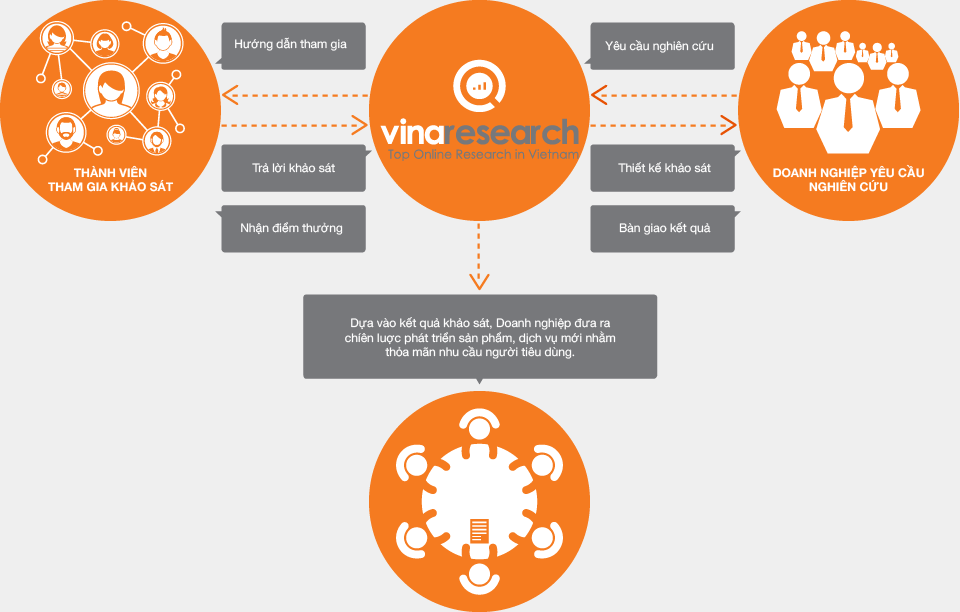
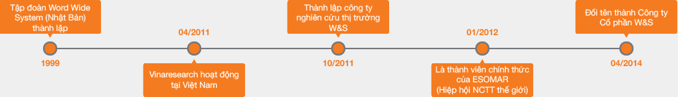

GIỚI THIỆU VỀ VINARESEARCH
CƠ CHẾ HỌAT ĐỘNG CỦA VINARESEARCH

Tại cộng đồng Vinaresearch các thành viên có thể tham gia trả lời khảo sát phục vụ nhu cầu nghiên cứu của các doanh nghiệp, tổ chức và đoàn thể. Thông tin khảo sát được thu thập và phân tích nhằm cung cấp cho đơn vị nghiên cứu bộ dữ liệu thống kê hoặc báo cáo tổng hợp, làm nền tảng cho các quyết định phát triển chiến lược.
Các thành viên khi tham gia khảo sát sẽ được nhận được một số điểm thưởng tương ứng. Điểm thưởng được sử dụng để chuyển đổi thành các phần quà giá trị như: thẻ cào điện thoại, tiền qua Ngân lượng hay liên kết mua hàng tại một số website liên kết.
Không chỉ nhận được điểm thưởng, sử dụng điểm thưởng để mua hàng hay đổi quà tặng, thành viên còn đuợc trân trọng vì ý kiến của bạn giúp ích rất nhiều trong việc phát triển các sản phẩm và dịch vụ, hỗ trợ xây dựng một nền kinh tế tốt hơn.
GIỚI THIỆU CÔNG TY
Công ty Cổ phần W&S là doanh nghiệp 100% vốn Nhật Bản tiên phong trong lĩnh vực Nghiên cứu thị truờng trực tuyến tại Việt Nam. Công ty được thành lập vào năm 2011 bởi ông Fujii Yoshio, Tổng giám đốc Tập đoàn World Wide System Nhật Bản.
Tháng 4 năm 2014, công ty chuyển đổi mô hình là công ty TNHH thành công ty Cổ phần W&S, với Tổng Giám đốc mới là ông Toshiya Momota. Là một trong những công ty tiên phong tại Việt Nam, W&S luôn không ngừng nỗ lực để hoàn thiện chất lượng khảo sát và phát triển - tối ưu hoá hệ thống khảo sát trực tuyến theo tiêu chuẩn quốc tế để đáp ứng các nhu cầu nghiên cứu đa dạng của các doanh nghiệp Việt Nam và nước ngoài.
Đội ngũ nhân viên Việt Nam – Nhật Bản của W&S luôn chú ý đến việc đảm bảo chất lượng của người tham gia khảo sát trực tuyến, nhằm đưa ra nguồn thông tin chính xác nhất, phản ánh đúng thực tế thị trường và hỗ trợ tối đa cho quá trình ra quyết định của khách hàng.
Tầm nhìn: Trở thành nhà cung cấp dịch vụ nghiên cứu trực tuyến hàng đầu Việt Nam
Xây dựng website Vinaresearch chúng tôi mong muốn đây không chỉ là một trang web hỗ trợ tích cực cho hoạt động nghiên cứu của các doanh nghiệp mà còn là nơi để các thành viên tham gia có thể đóng góp ý kiến của mình, tham khảo các nghiên cứu tiêu dùng cũng như xây dựng các khảo sát nhanh của riêng mình và nhận các phần quà nhỏ.
Lịch sử hình thành:

Thông tin bổ sung:
Hiện tại công ty Cổ phần W&S là 1 thành viên của Tập đoàn W&S (W&S Group) với các văn phòng cơ sở có mặt tại Nhật Bản (Tokyo, Osaka, Okayama), Việt Nam (Hồ Chí Minh), Indonesia (Jakarta), Thái Lan (Bang Kok). Tập đoàn W&S cung cấp dịch vụ Nghiên cứu thị trường, Internet Marketing và Thiết kế Website.